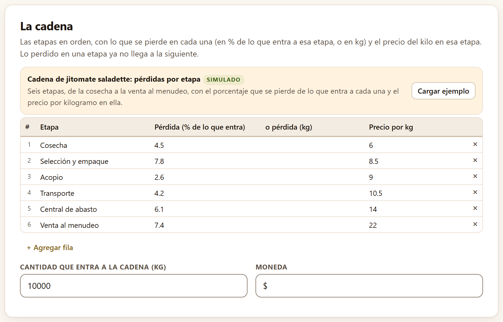
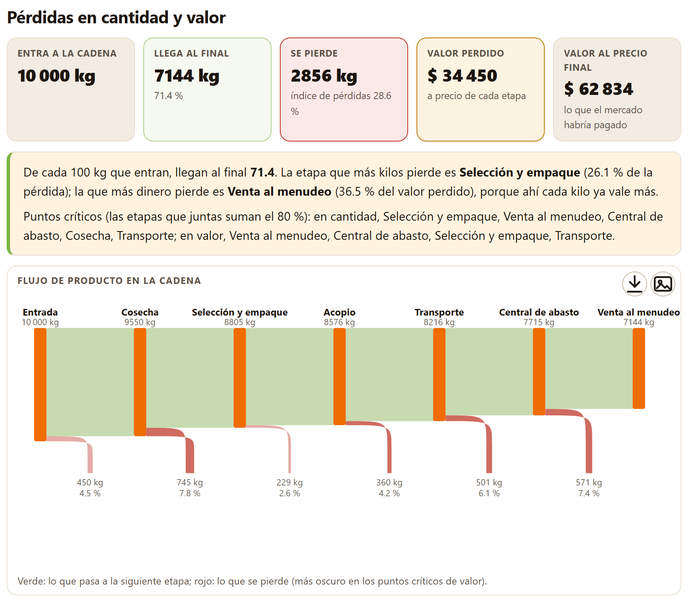
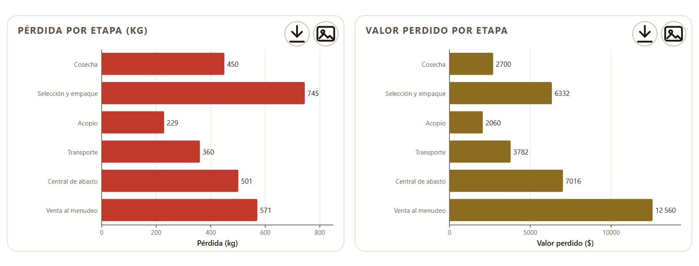
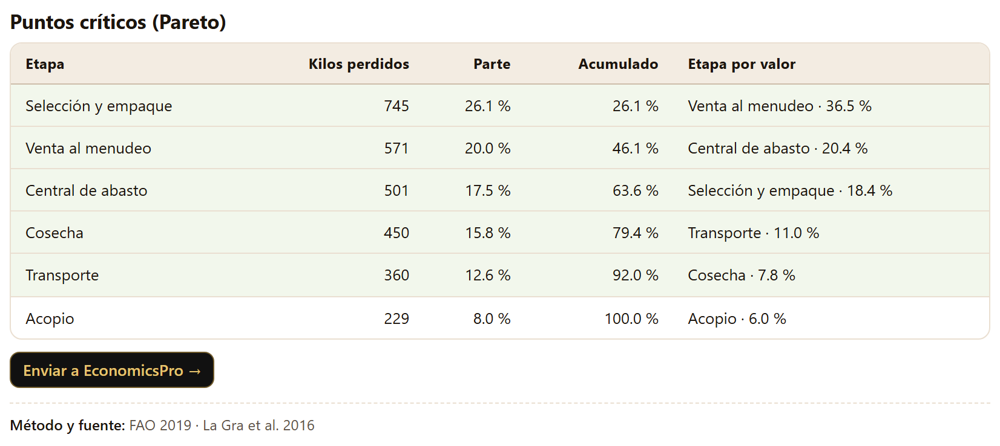
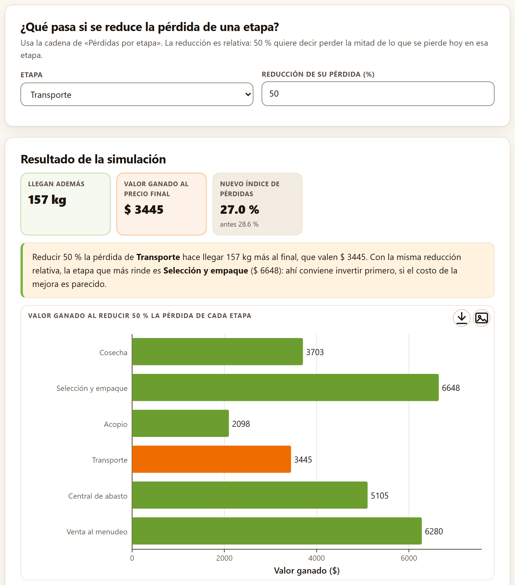
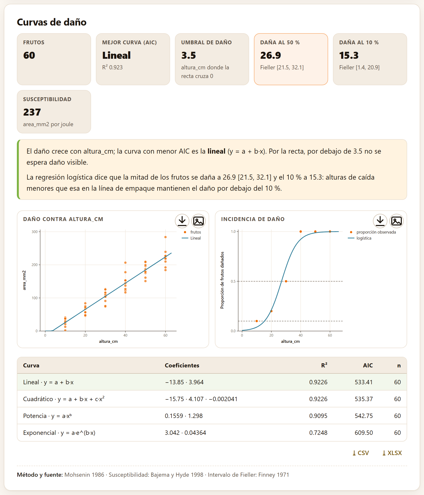
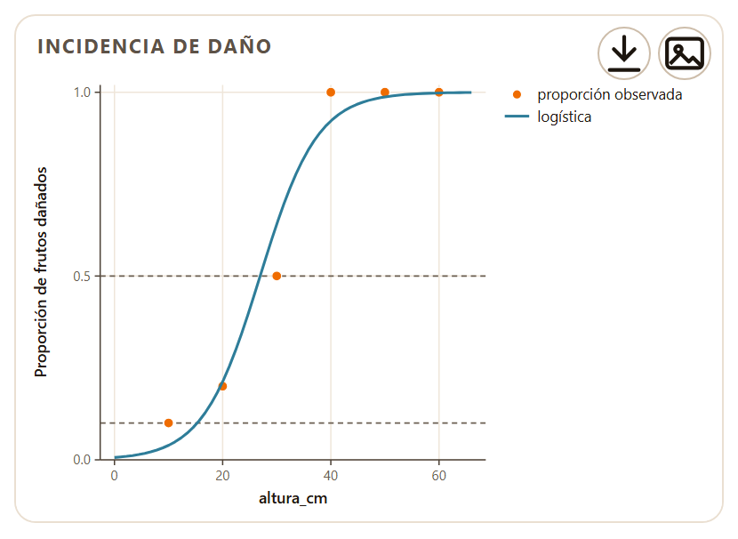

Entre el campo y el consumidor, cada etapa se queda con una parte del producto. Este bloque sigue la carga etapa por etapa, dice cuántos kilos y cuánto dinero se pierden en cada una, cuáles son los puntos críticos y dónde rinde más una mejora; y, con un ensayo de caídas, desde qué altura empieza a dañarse el fruto.
El Bloque 5 lleva por subtítulo «Cantidad y valor perdidos por etapa, puntos críticos, simulación y daño mecánico». Tiene tres pestañas: Pérdidas por etapa, Simular mejoras y Daño mecánico. Las dos primeras trabajan sobre la misma cadena, que se escribe en una tabla editable; la tercera lee una tabla con la entrada de datos común (sección 2.1). Los dos ejemplos son el jitomate saladette de ejemplo, simulado: una cadena de seis etapas y un ensayo de caídas con 60 frutos (sección I.7).
Una cadena poscosecha es una sucesión de etapas —cosecha, selección, acopio, transporte, mayoreo, menudeo—, y lo que se pierde en una ya no llega a la siguiente. Por eso la pérdida de cada etapa se expresa sobre lo que entra a ella, y las pérdidas se acumulan.
La tarjeta La cadena es una tabla editable, una fila por etapa y en orden, con cuatro columnas:
Debajo van la Cantidad que entra a la cadena (kg) (10 000) y la Moneda ($), que sólo cambia el símbolo de los resultados. La pestaña abre con una cadena corta de cuatro etapas escrita de partida (Cosecha, Empaque, Transporte y Venta), en la que llegan al final 7803 de los 10 000 kg. El botón Cargar ejemplo de la franja del ejemplo —esta tarjeta tiene el suyo propio, no la entrada de datos común— la reemplaza por la cadena del jitomate, y lo mismo hace Abrir en … desde la portada. Una fila sin nombre, o sin porcentaje ni kilos, no entra en el cálculo.

Si a la etapa i entran Ei kilos y pierde la fracción pi, pierde Ei·pi y deja pasar Ei+1 = Ei(1 − pi). El índice de pérdidas es lo perdido en toda la cadena sobre lo que entró, en %. El valor de lo perdido se cuenta de dos maneras: al precio de cada etapa, lo que de verdad valía el producto cuando se perdió; y al precio final, lo que el mercado habría pagado si hubiera llegado. Es la lógica de seguimiento de la carga del índice de pérdidas de alimentos de la FAO (2019) y de la evaluación de sistemas de La Gra et al. (2016).
La tarjeta Pérdidas en cantidad y valor resume la cadena en cinco mosaicos, una lectura, un diagrama de Sankey, dos gráficas de barras y la tabla por etapa.
Los mosaicos son Entra a la cadena, Llega al final (con su porcentaje), Se pierde (con el índice de pérdidas), Valor perdido («a precio de cada etapa») y Valor al precio final («lo que el mercado habría pagado»). La lectura dice cuántos kilos de cada 100 llegan al final, qué etapa pierde más kilos y cuál más dinero, y nombra los puntos críticos (sección 5.3).

En el diagrama de Sankey el ancho de cada banda es proporcional a los kilos: la verde se angosta etapa por etapa y de su borde inferior cae, en rojo, lo que se pierde, con sus kilos y su porcentaje. Cada columna lleva el nombre de la etapa y los kilos que salen de ella. Las dos gráficas de barras, Pérdida por etapa (kg) y Valor perdido por etapa, ponen las etapas una junto a otra para compararlas.

| Etapa | Entra (kg) | Pierde (kg) | % de lo que entra | % del total inicial | % acumulado | Precio | Valor perdido | Sale (kg) |
|---|---|---|---|---|---|---|---|---|
| Cosecha | 10 000 | 450 | 4.50 | 4.50 | 4.50 | 6.00 | 2700 | 9550 |
| Selección y empaque | 9550 | 745 | 7.80 | 7.45 | 11.95 | 8.50 | 6332 | 8805 |
| Acopio | 8805 | 229 | 2.60 | 2.29 | 14.24 | 9.00 | 2060 | 8576 |
| Transporte | 8576 | 360 | 4.20 | 3.60 | 17.84 | 10.50 | 3782 | 8216 |
| Central de abasto | 8216 | 501 | 6.10 | 5.01 | 22.85 | 14.00 | 7016 | 7715 |
| Venta al menudeo | 7715 | 571 | 7.40 | 5.71 | 28.56 | 22.00 | 12 560 | 7144 |
De cada 100 kg que entran, llegan al final 71.4. Las pérdidas por etapa son pequeñas —ninguna llega al 8 % de lo que entra—, pero se acumulan hasta un índice de 28.6 %. Lo perdido valía $ 34 450 al precio de cada etapa; al precio final de $ 22 el kilo, el mercado habría pagado por ello $ 62 834. La etapa que más kilos pierde es Selección y empaque (26.1 % de la pérdida); la que más dinero pierde es Venta al menudeo (36.5 % del valor perdido), «porque ahí cada kilo ya vale más».
Bajo la tabla de Pareto (sección 5.3), el botón Enviar a EconomicsPro → descarga la cadena como perdidas_cadena.csv —etapa, kilos que entran, que se pierden y que salen, porcentaje, precio y valor perdido— y abre EconomicsPro, la aplicación de la suite para la evaluación económica de proyectos, en una pestaña nueva; un aviso recuerda abrir el archivo en su bloque de datos. Abrir esa aplicación en línea es lo único de este bloque que necesita conexión; el CSV se descarga de todos modos.
No todas las etapas pesan igual. El análisis de Pareto ordena las etapas de mayor a menor pérdida y señala las que, juntas, suman el 80 %: los puntos críticos, donde conviene buscar primero.
La tabla Puntos críticos (Pareto) ordena las etapas por Kilos perdidos, con su Parte de la pérdida y el Acumulado, y al lado el orden por valor (Etapa por valor, con su parte del valor perdido). Las filas sombreadas son los puntos críticos en kilos. La app toma las etapas, en orden, hasta que el acumulado llega al 80 %, incluida la que lo cruza.

En el ejemplo, los puntos críticos en kilos son Selección y empaque, Venta al menudeo, Central de abasto, Cosecha y Transporte; en valor, Venta al menudeo, Central de abasto, Selección y empaque y Transporte. Que el criterio de los kilos apunte al principio de la cadena y el del dinero al final es lo usual: lo que se pierde temprano pesa más, lo que se pierde tarde vale más. En una cadena con pérdidas tan parejas como esta, el 80 % abarca casi todas las etapas; el Pareto discrimina mejor cuando una o dos etapas concentran la pérdida.
¿Qué pasaría si una etapa perdiera la mitad de lo que pierde hoy? La pestaña Simular mejoras lo calcula sobre la cadena de Pérdidas por etapa y compara la misma mejora en todas las etapas.
La tarjeta ¿Qué pasa si se reduce la pérdida de una etapa? tiene dos controles: Etapa, con las etapas de la cadena, y Reducción de su pérdida (%) (50), relativa: 50 % es perder la mitad de lo que se pierde hoy en esa etapa. Si la cadena todavía no existe, avisa: «Primero arma la cadena en «Pérdidas por etapa».». Los resultados, en Resultado de la simulación, son tres mosaicos —Llegan además, Valor ganado al precio final y Nuevo índice de pérdidas con el de antes—, la lectura, la gráfica Valor ganado al reducir 50 % la pérdida de cada etapa (la etapa elegida en naranja) y la tabla con los kilos que llegan además, el valor ganado y el nuevo índice de cada etapa.

Con la cadena del ejemplo y una reducción de 50 %, el transporte (4.2 % → 2.1 %) hace llegar 157 kg más al final, que valen $ 3445 al precio final, y el índice baja a 27.0 %. La comparación de las seis etapas da Selección y empaque $ 6648 (302 kg), Venta al menudeo $ 6280 (285 kg), Central de abasto $ 5105, Cosecha $ 3703, Transporte $ 3445 y Acopio $ 2098. La lectura concluye: «la etapa que más rinde es Selección y empaque ($ 6648): ahí conviene invertir primero, si el costo de la mejora es parecido».
Un kilo que se salva en cualquier etapa llega al final y se vende al precio del menudeo; por eso la simulación lo valora a ese precio, y por eso salvar kilos al principio de la cadena rinde tanto aunque ahí el kilo valga poco. Venta al menudeo, la etapa que más dinero pierde (sección 5.3), no es la que más rinde mejorar. Compara siempre el valor ganado con lo que cuesta la mejora: la app no conoce ese costo.
Al abrir la pestaña, la Etapa propuesta es la que más valor pierde en la cadena con que se abrió la app. Después de cargar el ejemplo del jitomate, el selector conserva la posición de la etapa que estaba elegida (la cuarta), que en la cadena nueva es Transporte, y no Venta al menudeo, la que más valor pierde ahora: elige tú la etapa que quieres simular.
Los golpes de la cosecha, la línea de empaque y el transporte dejan magulladuras que no se ven al principio pero que se pudren o se rechazan después. Un ensayo de caídas desde varias alturas dice cuánto daño produce cada altura y desde cuál empieza.
La tarjeta Ensayo de impacto o compresión pide, una fila por fruto, Altura, energía o fuerza —obligatoria— y tres columnas opcionales: Tamaño del daño (área, volumen o profundidad de la magulladura), Dañado (0/1) y Masa del fruto (g). Con el ejemplo, la app elige altura_cm, area_mm2, danado y masa_g; la tabla trae además energia_J y volumen_mm3, que puedes elegir en lugar de las propuestas.

Con el tamaño del daño, la app ajusta cuatro curvas por mínimos cuadrados y las compara por su AIC: lineal (y = a + b·x), cuadrática (y = a + b·x + c·x²), potencia (y = a·xᵇ) y exponencial (y = a·e^(b·x)); las dos últimas se ajustan en escala logarítmica, como se acostumbra en la literatura de impactos, y sólo con los frutos de tamaño y altura positivos (Mohsenin 1986). La tabla da los coeficientes, el R², el AIC y el número de frutos de cada curva, y sombrea la de menor AIC. La figura Daño contra la columna elegida dibuja los frutos, la recta y, si es otra, la curva de menor AIC.
| Curva | Coeficientes que muestra la app | R² | AIC |
|---|---|---|---|
| Lineal | −13.85 · 3.964 | 0.9226 | 533.41 |
| Cuadrática | −15.75 · 4.107 · −0.002041 | 0.9226 | 535.37 |
| Potencia | 0.1559 · 1.298 | 0.9095 | 542.75 |
| Exponencial | 3.042 · 0.04364 | 0.7248 | 609.50 |
En las curvas de potencia y exponencial, el primer número que muestra la tabla es ln a, el intercepto de la recta en escala logarítmica, aunque la columna esté rotulada con la ecuación en a: la curva de potencia del ejemplo es y = e0.1559·x1.298 = 1.17·x1.298.
El Umbral de daño es la altura donde la recta cruza el cero, −a/b: por debajo de ella, según la recta, no se espera daño visible. La Susceptibilidad es el tamaño del daño por joule de energía de impacto, con la energía calculada de la masa y la altura, E = m·g·h (Bajema y Hyde 1998). Aparece sólo si eliges la masa; la app usa la energía que calcula, no la columna energia_J.
La curva de menor AIC es la lineal (R² 0.923, AIC 533.41): el área del daño crece 3.964 mm² por cada centímetro de caída. La cuadrática ajusta igual (R² 0.9226) pero paga un parámetro más. La recta cruza el cero a 3.5 cm: «por debajo de 3.5 no se espera daño visible» —la lectura no escribe la unidad, que es la de la altura, centímetros—. La susceptibilidad es 237 mm² por joule; la app la rotula con el nombre de la columna, «area_mm2 por joule».
Bajema y Hyde (1998) definen la susceptibilidad como volumen del daño por joule absorbido. Con el área, como propone la app por omisión, la cifra no es comparable con las publicadas; elige volumen_mm3 en Tamaño del daño si quieres la definición del artículo. En el jitomate de ejemplo, con el volumen, la susceptibilidad es 135 mm³ por joule, la curva de menor AIC pasa a ser la cuadrática (R² 0.791) y el umbral de la recta sube a 11.1 cm: el volumen del daño es mucho más ruidoso que su área.
El tamaño de la magulladura no lo es todo: para un empacador, lo que importa es qué proporción de frutos sale dañada. Con la columna Dañado (0/1), la app ajusta una regresión logística de la incidencia contra la altura y calcula las alturas que dañan al 50 % y al 10 % de los frutos.
Los coeficientes se estiman por mínimos cuadrados reponderados iterativos, y el intervalo de confianza de 95 % de cada altura, que es un cociente de dos coeficientes, por el método de Fieller (Finney 1971). La columna debe traer sólo ceros y unos; si trae otra cosa, la app no ajusta la logística. Los mosaicos Daña al 50 % y Daña al 10 % dan las dos alturas con su intervalo, y la figura Incidencia de daño dibuja la proporción observada en cada altura, la curva logística y dos líneas punteadas en 0.5 y 0.1.

La mitad de los jitomates del ejemplo se daña con una caída de 26.9 cm [21.5, 32.1] y el 10 % con 15.3 cm [1.4, 20.9]. La lectura lo traduce a una regla para la línea de empaque: «alturas de caída menores que esa […] mantienen el daño por debajo del 10 %». El intervalo del 10 % es muy ancho por abajo porque hay pocos frutos dañados a alturas bajas: si la decisión depende de ese número, repite el ensayo con más frutos entre 5 y 20 cm.
| Si la etapa que más kilos pierde no es la que más dinero pierde… | es lo normal: el precio sube a lo largo de la cadena. Decide con el valor ganado de Simular mejoras, no con los kilos. |
| Si los puntos críticos son casi todas las etapas… | las pérdidas están repartidas: no hay un cuello de botella, y una mejora general (frío, manejo) rinde más que una puntual. |
| Si una etapa aparece crítica en kilos y en valor… | es la primera candidata a invertir. |
| Si las caídas de la línea de empaque superan la altura que daña al 10 %… | baja las alturas de transferencia o pon material amortiguador; mide de nuevo después del cambio. |
El valor ganado no descuenta el costo de la mejora ni el de manejar más producto: para eso está la evaluación económica (EconomicsPro).